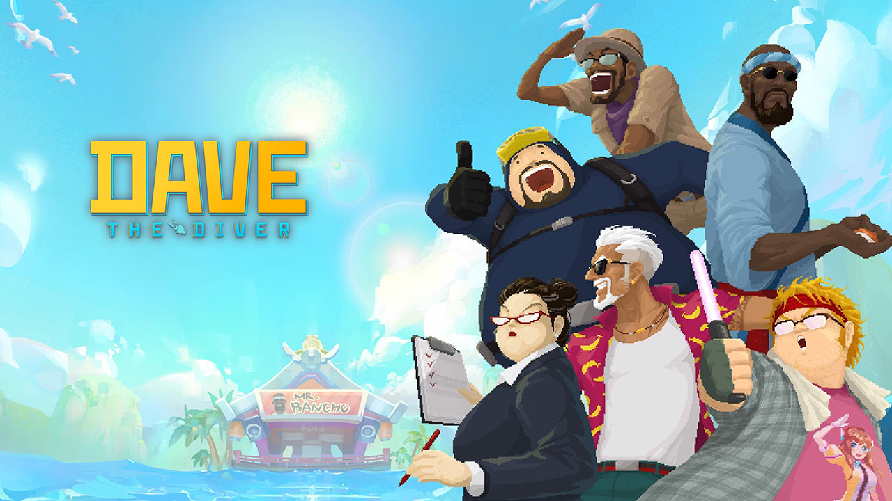

필자가 어린 시절에만 해도 ‘게임’은 ‘아이들의 전유물’ 혹은 ‘하위문화’로 여겨지거나, 심지어 오락실, PC방 같은 공간들에서 게임을 즐기는 아이들이 ‘불량 청소년’ 취급을 받기도 했다. 하지만 오늘날에 이르러서 게임은 첨단 기술과 장대한 설정 및 시나리오, 화려한 시각 예술과 웅장한 음악 그리고 톡톡 튀는 아이디어가 결합된 종합 예술이자, 현대인의 일상에 깊숙이 자리 잡은 주류 여가 문화가 되었다. 더 나아가 우리나라의 게임산업은 경제적 측면에서도 단일 산업으로서 영화나 음악 산업의 규모를 훌쩍 뛰어넘으며, 미래 경제를 견인하는 핵심 콘텐츠 산업으로 확고한 위상을 다지고 있다. 하지만 게임 산업의 덩치가 커지고 막대한 자본이 투입되면서, 성공한 게임의 시스템이나 규칙, 인터페이스를 교묘하게 차용하는 이른바 ‘미투(Me-too) 게임’, ‘양산형 게임’ 논란이 끊이지 않고 있다. 이에 본 특집 기획에서는 과거와 비교해 획기적으로 달라진 게임의 위상을 짚어보고, 세계 무대로 뻗어나가는 K-게임의 위상을 조명한다. 나아가 최근 게임 업계의 지각변동을 일으키고 있는 주요 저작권 판결 동향을 분석함으로써, K-게임이 지속 가능한 성장을 이루기 위해 나아가야 할 올바른 저작권 문화의 나아갈 방향을 제안해본다.
01 달라지고 있는 게임의 위상: 하위문화에서 대한민국의 핵심 문화로
앞서 살펴보았듯 불과 십여 년 전만 해도 게임은 ‘시간 낭비’나
‘아이들의 장난감’으로 치부되며 사회적 편견의 대상이 되곤 했다.
그러나 게임산업의 규모와 문화적 다양성이 급성장함에 따라 현재의
게임산업은 완전히 다른 상황에 놓여있다. 게임은 이제 명실상부한
대한민국 국민의 보편적이고 사랑받는 여가 문화 중 하나로 자리
잡았다.
2024년 한국갤럽이 발표한 ‘한국인이 좋아하는 취미’ 조사에서
게임이 당당히 1위를 차지한 것은 이러한 대중적 인식 변화를
보여주는 중요한 단면이다. 세대 간 응답률의 격차는 있지만 독서와
등산, 음악 감상 등 전통적인 취미를 제치고 전 세대를 아우르는
일상적 문화로 격상된 것이다.
나아가 게임은 대중적인 인기를 넘어, 법적·제도적으로도 그
문화예술적 가치를 확고히 인정받았다. 「문화예술진흥법」 개정을
통해 게임이 문학, 미술, 음악 등과 나란히 ‘문화예술’의 범주에
정식으로 편입된 것이다. 이는 게임이 단순한 오락을 넘어 서사와
그래픽 디자인, 음악과 기술이 융합되어 상호 작용하는 새로운
유형의 ‘종합 문화예술’로서 받아들여지기 시작하였음을 드러내는
중요한 변곡점이었다.
산업적 측면에서 바라본 게임의 위상은 더욱 압도적이다. 현재
K-게임은 전체 콘텐츠 산업에서 핵심적인 매출 비중을 담당하고
있다. K-팝, K-드라마, 영화 등 세계적으로 주목받는 수많은 한국
콘텐츠 중에서도 최근 수년 간 전체 수출액의 약 60~70%에 육박하는
비중을 차지하며 국가 경제를 견인하는 구심점 역할을 하고 있다.
또 한가지 주목할 만한 변화는 게임을 소비하는 이용자들의 능동적인
태도다. 최근 게임물 사전 검열 조항에 반대하며 제기된 헌법소원에
헌정 사상 최대 규모인 21만 751명의 청구인이 자발적으로 참여한
사건은 시사하는 바가 크다. 이는 게이머들이 더 이상 수동적인
‘소비자’에 머물지 않고, 자신들이 향유하는 문화의 권리를 지키고
제도를 개선하기 위해 적극적으로 연대하며 목소리를 내는 ‘성숙한
문화 향유자’로 발전했음을 명확히 보여준다.
02 세계로 뻗어나가는 K-게임: 글로벌 지식재산권(IP)으로의 도약
한국 게임의 해외 진출 역사는 결코 짧지 않다. 2000년대 초반
‘리니지’, ‘미르의 전설 2’, ‘라그나로크 온라인’ 등 1세대 PC
MMORPG(다중접속역할수행게임)는 아시아권 유저들을 매료시키며
K-게임 한류의 신호탄을 쏘아 올렸다.
이후 ‘크로스파이어’, ‘던전앤파이터’, ‘서머너즈 워’ 같은 작품들이
전 세계적인 메가 히트를 기록하며 막대한 수출 탑을 쌓았다. 다만
과거의 성공은 주로 특정 장르와 유사한 수익 모델에 집중되어
있었고, 주력 시장 역시 중국 시장에 편중되어 있다는 한계점도
존재했다.
하지만 현재 K-게임이 창출해 내는 파급력은 과거의 한계를 넘어서고
있다. 단일 IP가 거두는 성과를 살펴보면 그 규모는 경이롭다.
스마일게이트의 ‘크로스파이어’는 글로벌 누적 매출 135억 달러(약
18~19조 원)를 돌파했고, 전 세계에 배틀로얄 장르 열풍을 일으킨
크래프톤의 ‘배틀그라운드’는 PC와 콘솔 부문 누적 매출액 4조 원,
모바일 버전 글로벌 누적 매출 100억 달러(약 14조 원)를 넘어섰다.
넥슨의 ‘던전앤파이터 모바일’ 역시 중국 출시 반년 여 만에 1조
5,200억 원 이상의 매출을 올리며 전 세계 모바일 게임 매출 1위에
등극했다.
최근의 괄목할 만한 성장은 비단 막대한 매출 규모에만 머물지
않는다. 그간 K-게임의 볼모지로 여겨지던 서구권 주요 시장인 PC
패키지와 콘솔 플랫폼에서도 평단의 극찬을 받으며 ‘완성도 높은
웰메이드(Well-made) IP’로 당당히 인정받는 사례가 점차 늘어나고
있는 것이다.

▲ 출처: 데이브 더 다이브 홈페이지
넥슨 민트로켓의 ‘데이브 더 다이버’는 영국 영화 텔레비전 예술
아카데미가 주최하는 권위 있는 시상식 ‘BAFTA 게임 어워즈
2024’에서 한국 게임 최초로 ‘게임 디자인(Game Design)’ 부문을
수상하는 쾌거를 이뤘다.
네오위즈의 ‘P의 거짓’은 유럽 최대 게임쇼 ‘게임스컴 어워드
2022’에서 국산 게임 최초로 3관왕을 달성하며 세계적인 기대를
입증했고, 그 확장팩 또한 2025 골든 조이스틱 어워드(GJA)에서
최고의 게임 확장팩으로 선정되는 쾌거를 낳았다.
더 나아가 시프트업의 ‘스텔라 블레이드’는 글로벌 주요 국가의
플레이스테이션 판매 차트를 석권한 데 이어, ‘2024 대한민국
게임대상’ 7관왕과 ‘2024년 PS블로그 올해의 게임’ 8개 부문을
휩쓸며 상업성과 작품성 두 마리 토끼를 모두 잡았다.
이러한 일련의 눈부신 성과들은 K-게임이 단순한 오락을 넘어 전
세계인이 열광하는 매력적인 세계관과 독창적인 게임성을 지닌
‘글로벌 지식재산권(IP)’으로 진화했음을 시사한다.
그리고 이처럼 한국 게임의 고유한 시스템과 매력적인 서사가 세계
시장에서 막대한 부가가치를 창출하게 되면서, 필연적으로 이 소중한
창작물들을 어떻게 법적으로 보호할 것인가 하는 중대한 화두가
선결문제로 남겨지게 되었다.
03 게임 저작권 판결 동향: ‘저작권법’과 ‘부정경쟁방지법’의 적용
앞서 살펴본 K-게임의 비약적인 성장 이면에는 어두운 이면도
존재한다. 하나의 게임이 흥행하면 그 핵심 시스템과 비즈니스
모델을 그대로 답습하는 ‘미투(Me-too) 게임’, ‘양산형 게임’의
범람이다. 그 대표적인 예시인 ‘리니지 라이크’류의 난립에 대해
사법부는 어떻게 바라보고 있을까?
초기 게임 저작권 분쟁에서 법원은 ‘아이디어’와 ‘표현’을 엄격하게
분리했다. 2007년 ‘봄버맨’과 ‘크레이지 아케이드’ 사건에서 법원은
“추상적인 게임의 장르, 기본적인 게임의 배경, 게임의 전개방식,
규칙 등은 아이디어에 불과하므로 저작권법에 의한 보호를 받을 수
없다”고 판시했다. 시각적 표현인 플레이필드, 맵, 캐릭터, 아이템
등의 디자인 요소만으로 실질적 유사성을 판단하여 저작권 침해를
인정하지 않은 것이다. 이러한 기조는 2018년 ‘부루마불’과 ‘모두의
마블’ 사건에서도 재확인되며, 껍데기(그래픽, 사운드)만 다르게
포장하면 알맹이(게임의 룰과 시스템, 배열)는 모방해도 무방한
것이냐는 우려를 낳았다.
그러나 2019년 대법원의 ‘포레스트 매니아’ 판결과 2022년
서울중앙지법의 ‘블랙 엔젤’ 게임 업계에 새로운 관점을 제시했다.
대법원은 개별 규칙들이 흔한 것이라 할지라도, 개발자의 특정한
제작 의도와 시나리오에 따라 그 요소들이 “선택·배열되고 유기적인
조합을 이루어 선행 게임물과 확연히 구별되는 창작적 개성을 갖추고
있으므로 저작물로서 보호 대상이 될 수 있다.”라고 판시하면서
실질적 유사성을 확인하고 해당 게임에 의한 저작권 침해를
인정했다.
이는 게임의 규칙과 진행 방식 등 기술적으로 구현된 조합 자체를
저작권법상 보호되는 창작물로 인정한 기념비적인 판결이라 평할 수
있겠다. 한편 최근 세간의 주목을 받고 있는 ‘모방 게임’관련 판결은
다소 다른 양상을 보이고 있다. 저작권법의 적용이 아닌,
부정경쟁방지 및 영업비밀보호에 관한 법률(이하 ‘부정경쟁방지법’)
위반 여부를 중점적으로 판단하는 것이다. ‘R2M’, ‘아키에이지 워’,
‘다크 앤 다커’ 등 이른바 ‘리니지 라이크’ 및 아이디어 도용 논란의
중심에 선 최신 사건들에서, 하급심 법원들은 해당 게임들의
규칙이나 시스템 자체를 온전한 저작권의 보호 대상으로 보지 않거나
실질적 유사성을 부정하는 대신, 타사가 막대한 자본과 노력으로
구축한 ‘타인의 성과를 무단으로 이용’하거나 ‘영업비밀을
침해’했다는 ‘부정경쟁방지법’ 위반을 적용해 서비스 중단 및
손해배상을 명하는 판단을 내리고 있다.
이러한 경향이 나타난 이유로는 먼저 복잡한 코드와 상호작용으로
이루어진 ‘복합저작물’인 게임의 특성상, 어느 한 요소가 다른
게임에 의거해 만들어졌는지(의거 관계), 그리고 그 뼈대가 얼마나
똑같은지(실질적 유사성)를 법리적으로 명확히 증명해 내기가
어렵다는 점과 현실적으로 각 재판부가 현대 게임 산업의 복잡한
메커니즘과 경제 구조에 대한 전문성과 깊은 이해도를 갖추기 쉽지
않다는 점을 들 수 있을 것이다.
다만 최근 대법원이 골프장 코스를 기능적 결과물로 보아
부정경쟁방지법만을 적용하였던 기존 판결을 저작권법으로 보호되는
창작물성을 인정하는 방향으로 변경하는 판례 변경이 이루어지는
등을 참고해 보면, 대법원이 게임에 대해서도 저작권 보호의 범위에
영역을 넓혀나갈 가능성도 여전히 존재한다.
04 사각지대를 파고든 도용: K-콘텐츠에 대한 저작권 보호의 중요성
지금 이 순간에도 K-게임의 화려한 도약 이면에 악의적인 도용
게임들은 모바일 앱 마켓을 매개로 끊임없이 쏟아지고 있다.
글로벌 흥행작 ‘배틀그라운드’의 인터페이스와 규칙을 조악하게 베낀
짝퉁 게임들이 범람하는 것은 이제 예사로운 일이 되었다. 심지어
정식 모바일 버전이 출시되지도 않은 ‘데이브 더 다이버’의 경우,
원작의 이름과 공식 이미지를 그대로 도용한 가짜 게임이 모바일
스토어에 버젓이 등록되어 유저들을 기만하는 사태까지 벌어졌다.
무단 도용의 마수는 타 게임을 넘어 대중문화 전반으로 뻗치고 있다.
최근 전 세계적인 열풍을 불러일으킨 ‘케이팝 데몬 헌터스’의 경우,
해당 IP의 높은 인기에 편승해 캐릭터와 음악을 무단으로 짜깁기한
불법 게임물이 앱스토어에 유통되며 창작자의 권리 침해를 낳고
있다.
05 결론: K-게임의 지속 가능한 미래, 올바른 저작권 문화에 답이 있다
지금까지 살펴본 바와 같이, 게임은 단순한 오락을 넘어 대한민국의
핵심 여가 문화이자 전 세계로 나아가는 문화예술 산업으로 괄목할
만한 성장을 이루었다.
K-게임은 이제 익숙한 성공 공식을 넘어 새로운 장르와 플랫폼을
개척하며 글로벌 IP로서 막대한 부가가치를 창출하고 있다. 그러나
이러한 눈부신 성장의 이면에는 성공한 게임의 시스템과 규칙을
무분별하게 차용하며 산업의 질적 저하를 초래하는 모방 관행의
위험성이 여전히 남아있다.
저작권은 게임 개발자들이 쏟아부은 막대한 시간과 자본, 그리고
창작의 고통을 지켜주는 가장 든든한 방패다. 제2의 ‘배틀그라운드’,
제2의 ‘데이브 더 다이버’가 탄생하기 위해서는 누군가의 독창적인
아이디어와 시스템이 시장에서, 그리고 법의 테두리 안에서 보호받고
합당한 수익창출로 이어질 수 있다는 믿음이 선행되어야 하며, 이는
K-컬처 시장 규모 300조 원, 문화 수출액 50조 원 시대로 나아가기
위한 핵심 과제이다.
게임 산업의 체질을 근본적으로 바꾸고 혁신을 이끌어내는 가장
강력한 원동력은 바로 게임을 직접 향유하고 소비하는 ‘이용자’에게
있다. 게임 저작권 보호의 진정한 완성은 이용자 스스로가 ‘짝퉁
게임’과 무단 도용 콘텐츠, 불법 다운로드를 철저히 외면하고,
창작자의 땀방울이 서린 독창적인 원작에 정당한 찬사와 가치를
지불하는 성숙한 소비 문화에서 비롯된다.
놀이에서 주류 문화로, 그리고 세계 시장을 선도하는 K-게임으로
진화해 온 한국 게임산업의 위상 변화는 놀라운 수준이다. 이제 그
역동성의 토대를 다지는 마지막 퍼즐은 바로 ‘올바른 저작권 문화의
정착’이다. 모방과 창작성의 아슬아슬한 경계에서, K-게임이 저작권
보호의 테두리안에서 더 넓은 세계로 나아가기를 기대한다.